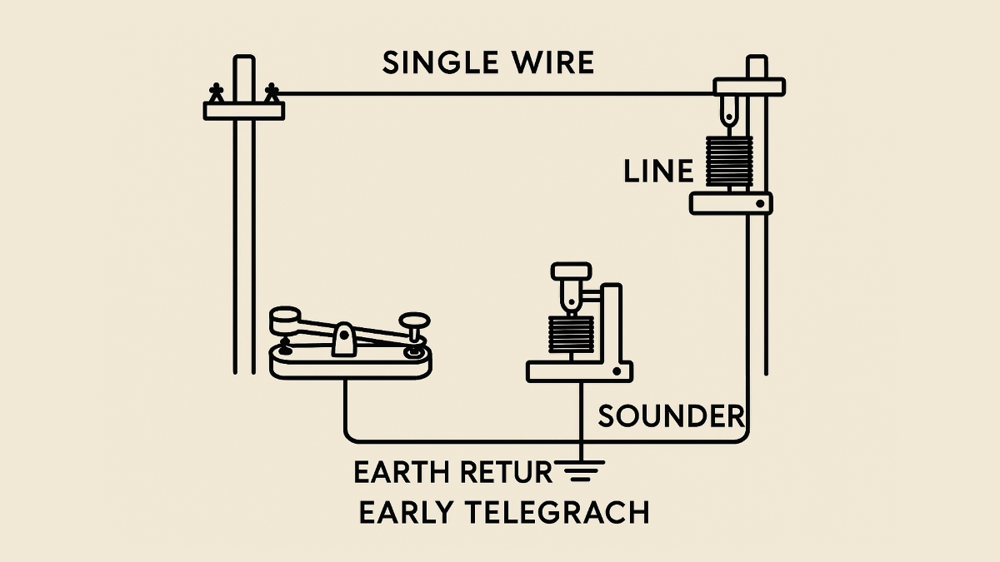

Data Communication & Networking
A summary of everything studied in Data Communication.
1. Introduction to Data Communication
Data communication is the exchange of data between devices through
transmission media such as cables, wireless signals, or satellites.
Components include:
- Sender
- Receiver
- Message
- Protocol
- Transmission Medium
2. Networking Fundamentals
Networking allows computers and devices to communicate and share resources.
Types of Networks
- LAN - Local Area Network
- MAN - Metropolitan Area Network
- WAN - Wide Area Network
3. Network Models & Transmission Media
The OSI Model contains 7 layers that explain how communication occurs in a network.
Transmission Media
- Twisted Pair Cable
- Coaxial Cable
- Fiber Optic Cable
- Wireless Communication
4. CIA Triad & Cybersecurity
The CIA Triad is the foundation of information security.
- Confidentiality - Protecting information
- Integrity - Maintaining accuracy
- Availability - Ensuring accessibility
5. Telegraph & Morse Code
Telegraph communication used electrical signals to send messages across long distances.


Key points about telegraph communication:
- Messages were transmitted using electric currents.
- Operators used a device called a telegraph key to send signals.
- The signals were coded using Morse code, developed by Samuel Morse.
- Morse code represented letters and numbers using combinations of dots and dashes.
- Telegraph systems greatly improved communication speed compared to letters carried by horses or ships.
How Morse Code Works
- A dot is a short electrical signal or sound.
- A dash is a longer signal.
- Operators listened to or read the patterns and translated them into words.
Uses of Morse Code
- Telegraph communication
- Maritime and military signaling
- Emergency distress communication
- Amateur radio communication
Educational Video